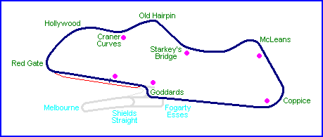
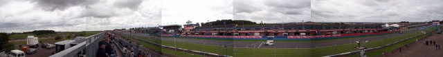
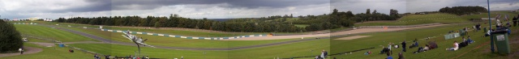
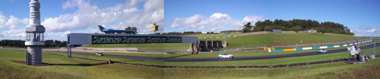
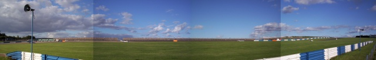
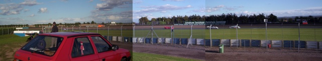
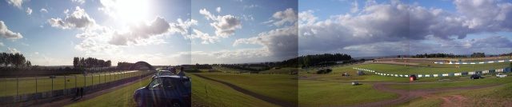
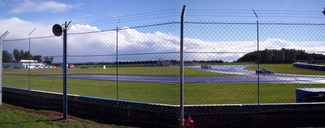

Donington, United Kingdom
Photographs Taken: 29 August 2004

Click on the photos below to zoom in

Pitstraight from grandstands (350.4 kb -
3080x400)

Craner Curves and the Old Hairpin (444.5 kb -
3527x400)

Starkey's Bridge (287.4 kb - 1905x400)

McLeans to Coppice (281.8 kb - 2514x400)

Coppice (297.9 kb - 2121x400)

Backstraight and the infield from Coppice
(312.7 kb - 2574x400)

Goddards (187.6 kb - 1015x400)
Return to racingcircuits.net's Photo Archive Main Index
©2004 Daniel King / racingcircuits.net. All rights reserved.